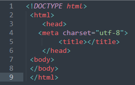
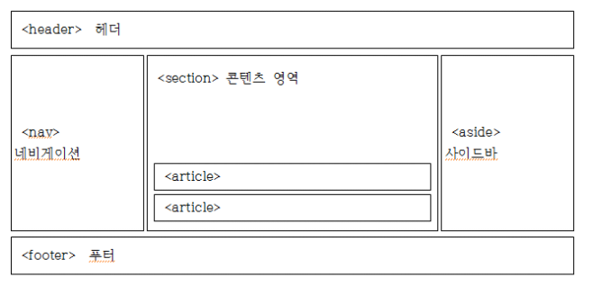
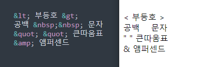

HTML5 기본 구조&시맨틱 태그

위 사진은 HTML File을 만들면 기본적으로 생성되는 시맨틱 태그들이다.
순서대로 정리하자면
-
1. 최신표준 HTML이란 뜻
-
2. 이 파일은 HTML이라고 정의 내리고 항상 마지막은 </html> 로 마무리 해줘야 함.
-
3. 이 영역에는 <meta>,<title>,<style> 등등의 시맨틱 태그가 들어감
meta는 인코딩 타입,title는 문서의 제목,style에는 자바스크립트나 css를 넣음
-
4. urf-8로 함으로써 대부분의 언어를 깨지는 현상을 없앨수있음.
-
7. body영역에 코드들이 들어가면 웹 브라우저에 표시, 또 대부분의 시맨틱 태그들이 이 영역에서 사용됨.
아래 정리할 태그들이 화면을 구성

-
<header>
위에서 언급한<head>는 <html>바로 밑에 쓰이지만 <header>는<body>안에 있기 때문에 둘은 전혀 다름
<header>은 주로 머리말,제목을 표현하기 위해 쓰임
-
<nav>
HTML5에서 새롭게 생긴 시맨틱태그, 콘텐츠를 담고 있는 문서를 사이트간에 서로 연결하는
링크의 역활을 담당. <nav>는 주로 메뉴에 사용되고 위치에 영향을 받지 않아 어디에서든 사용 가능
-
<section>
<body>영역은 콘텐츠를<header>,<section>,<footer>의 3가지 공간에 콘텐츠를 저장하는데
그중 <section>은 본문 콘텐츠를 담고있음. <section>안에 <section>을 넣는 것도 가능함.
-
<article>
<section>이 콘텐츠를 분류한다면 <article>는 태그안에 실질적인 내용을 넣음 .
예를 들어 대분류는<section>이고 내용은 <article>에 넣음
-
<aside>
본문 이외의 내용을 담고 있는 시맨틱 태그, 주로 본문옆에 광고를 달거나 링크들을 이 공간에 넣어 표현
-
<footer>
화면의 구조 중 제일 아래에 위치, 보통 웹 브라우저를 보면 회사소개,저작권,약권,제작정보 등이 들어감
(연락처는 <address>태그를 사용하여 표시)
-
<div>
위 사진에는 없지만 <div>는 HTML5에 와서 글자나 사진등 콘텐츠들을 묶어서 css스타일을 적용시킬때 사용
태그의 개념
- 태그 : 태그는 <>와</>기호를 통해 컨텐츠의 시작과 끝을 알림
-
단일태그 : 시작과 끝을 구분할 필요가 없는 태그
Ex)<태그명/>또는<태그명>
-
속성 : 속성은 태그의 부가적인 기능을 정의하는것 , 선택사항이다
Ex)<태그명 속성명="속성값"/>=태그명과 속성정의는 공백으로 구분하며, 큰 따움표를 사용
-
주석 : 주석 처리 할때는 <!--내용-->
-
블록 레벨 요소 : 자기가 속한 영역의 너비를 모두 차지해 블록을 형성된다
-
인라인 요소 : 자기에게 필요한 만큼의 공간만 차지
텍스트 태그 정리
-
<p>
문단을 나타내는 태그로 문단과 문단 사이에는 공백이 있음
-
<br>
단순히 줄을 바꾸는 태그로 <p>태그와는 달리 여백이 x
-
<h1>~<h6>
제목(표제)요소를 나타내는 태그, 숫자1일때 가장 큼
※무분별하게 사용시 검색엔진이 웹페이지의 중요한 부분을 찾기에 혼동이 올수있으므로 크기와 스타일만을 바꾸려면 <font>태그를 쓰는게 좋음
-
<pre>
<pre>태그는 <pre>~<pre>구간에 있는 글들을 사용자가 설정한 글꼴, 글자크기, 줄 바꿈등이 그대로 출력되는 태그
-
<hr>
주제 변경 혹은 내용 구분을 위해 주로 사용하는 수평선 태그이다
-
컨테이너 태그
<div>
스타일을 지정하거나 이벤트를 수행하기위한 컨테이너태그로 사용됨
(div태그는 bolock형식이며 칸을 다 채운다)
<span>
div와 마찬가지로 스타일을 지정하거나 이벤트를 수행하기 위한 컨테이너태그로 이용
(단 div와 달리 inline형식으로 자신의 내용만큼 크기를 설정.)
-
텍스트 서식 태그

텍스트들을 굵게 하거나 작게하는등의 서식태그는 지정범위를 만들어 적용
+<u>태그는 아래 밑줄을 그음
-
특수기호

다른 특수 부호는 그냥 쓰면 되지만 , 코드에서는 들이 태그로 쓰이기때문에 명령어로 표현해야함
텍스트 태그 연습
연습하고 있습니다
작은 제목
제목 크기 변경
p 태그는 하나의 문단을 나타냄
따라서 하나의 p 태그는 자기만의 영역을 가짐
더 작은 제목
여기선 굵게 기울게 형광표시 로 만듬
나는 굵게
나는 이탤릭체
나는 형광